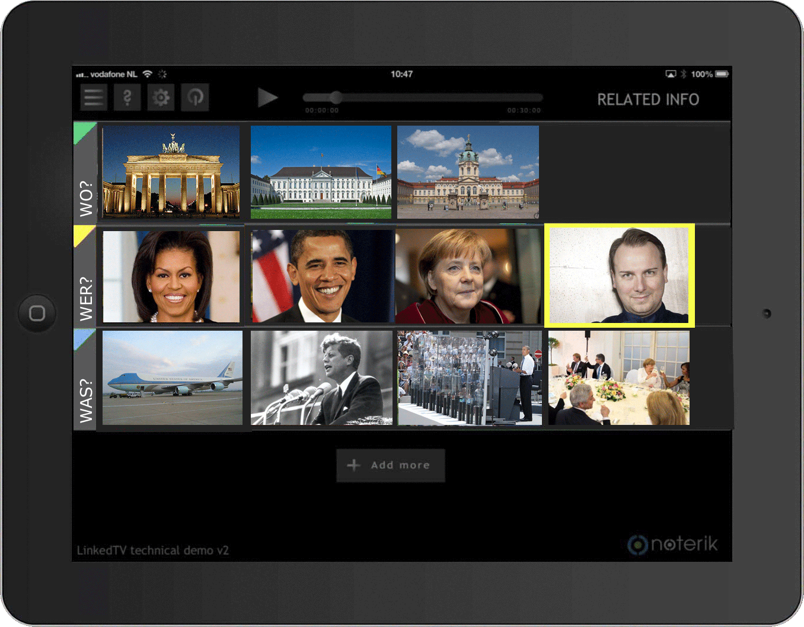
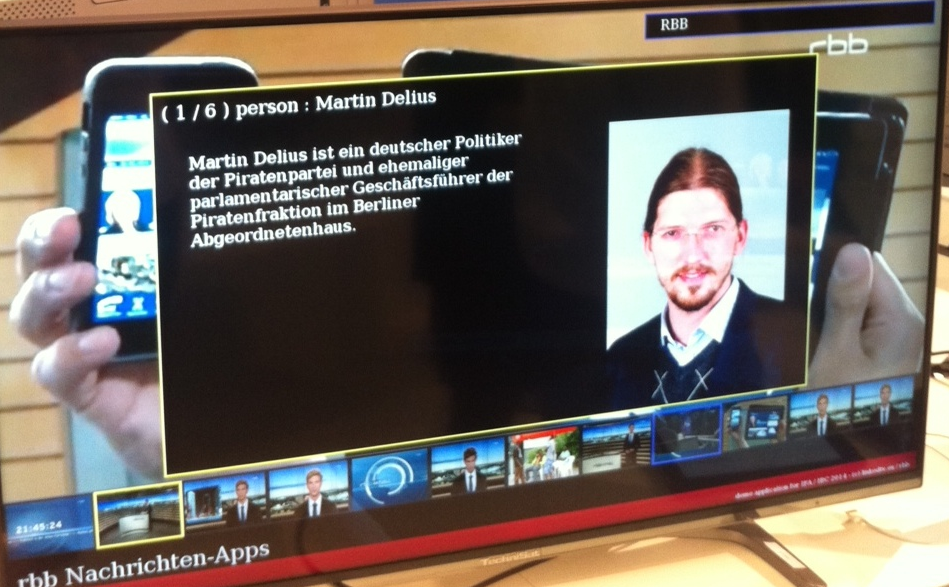
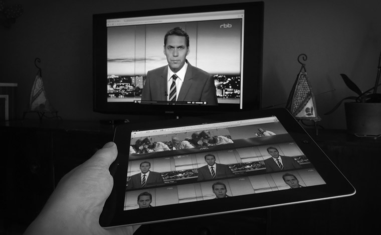

|  | The LinkedTV Player is a multiscreen player that runs on both televisions and mobile devices. Combined together with the LinkedTV Platform a powerful second screen becomes possible that provides additional and relevant information accompanying your videos. Bookmarking interesting moments and personalised recommendations ensure the perfect user experience using the LinkedTV Player. The out of the box player provides a generic user interface to accessing and browsing annotations and enrichments coming from LinkedTV, but this interface can be customised to any customer using regular Web technologies (HTML, CSS). | ||
| Now with HbbTV support the LinkedTV Player can be easily integrated into broadcast environments directly offering its features to HbbTV compatible televisions. |  | ||
|  | The LinkedTV Player is built upon the open source Springfield multiscreen toolkit. The toolkit answers a growing need to be able to work seamlessly with video across devices and screens. The HTML5 based toolkit provides a basis for building and prototyping a wide range of multiscreen solutions. For more information, please see Multiscreen Toolkit site | ||
|
For more details of our open source efforts, see http://noterik.github.io
Contact details:
Rutger Rozendal Noterik B.V. +31 20 24 01 144 |
|
||
Linked Television Player